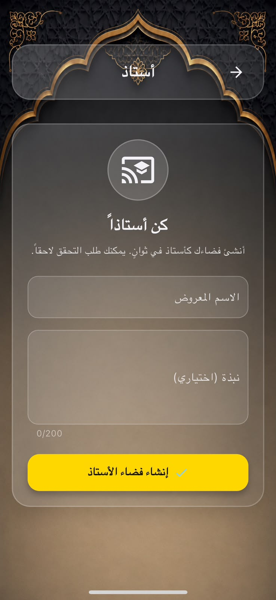
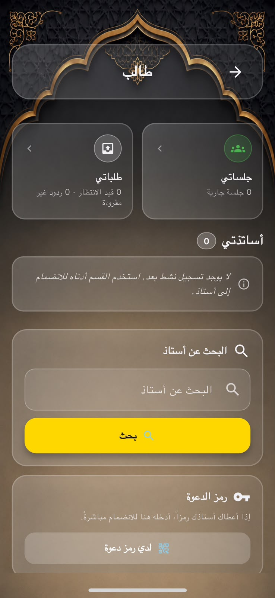
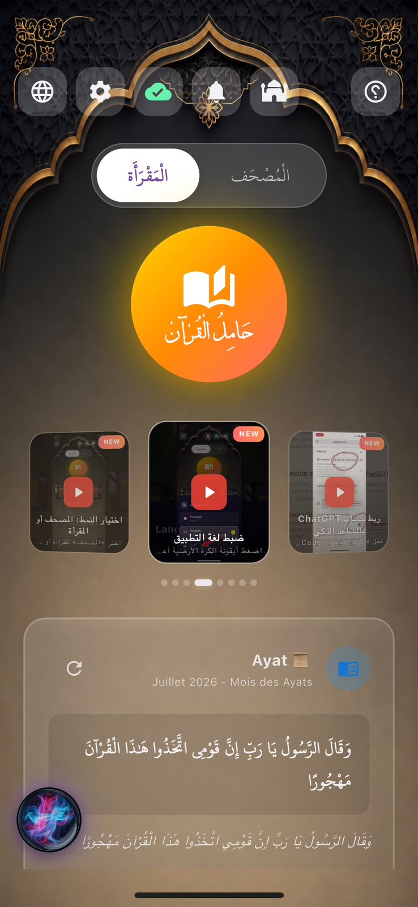
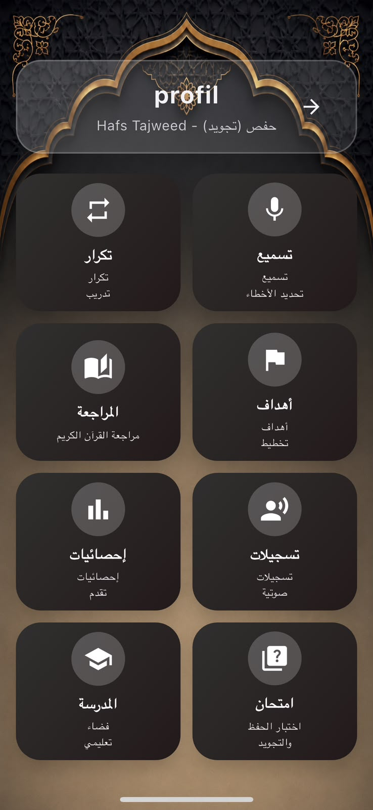
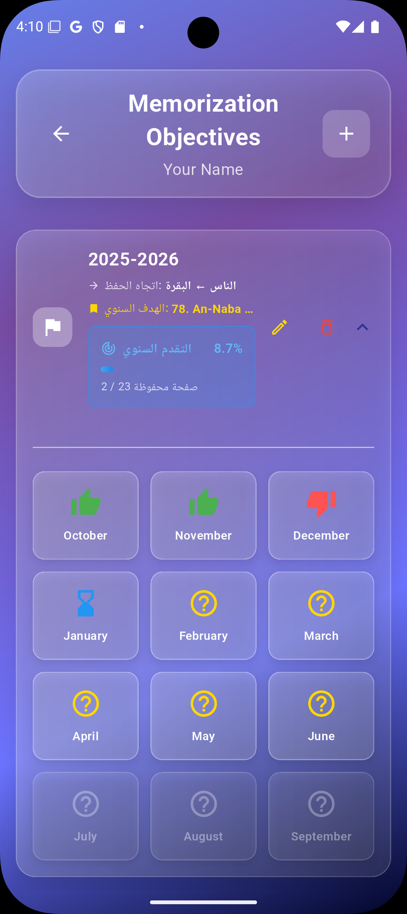
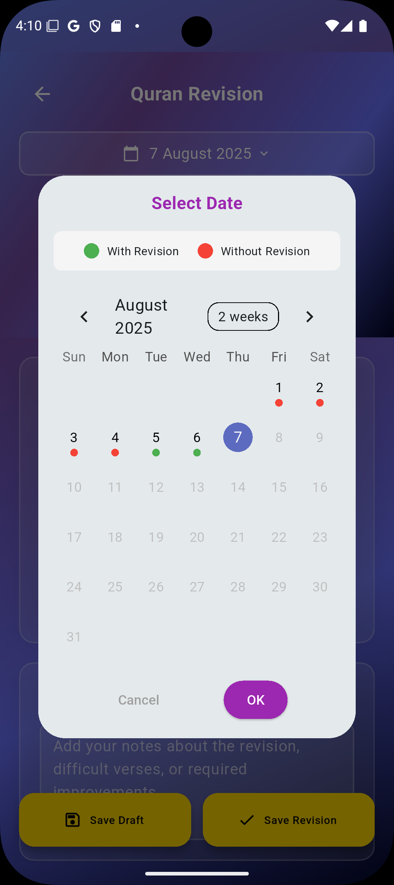
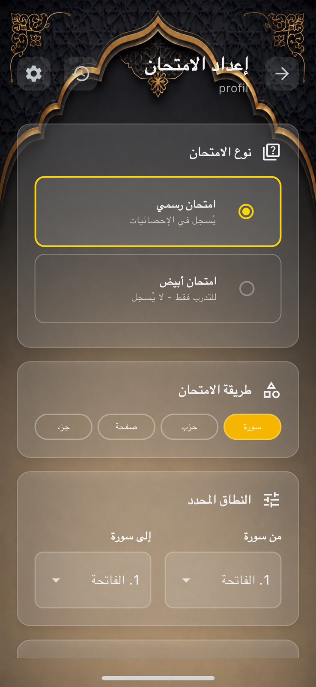

Retrouvez le plaisir de lire.
Lisez le Coran en images haute qualité, avec plusieurs riwāyāt (Hafs, Warsh, Qālūn…). Touchez un verset pour interagir, marquer, écouter.
Mushaf multi-riwaya · Lecture confortableUn lien au Coran. Chaque jour.
Mémorisez et révisez le Coran, autrement.
Un espace pour lire, mémoriser et progresser. À votre rythme, où que vous soyez.
Gratuit. Sans publicité. Disponible hors-ligne.
Faites glisser pour explorer
De la première lecture à la mémorisation, chaque étape trouve sa place.
Lisez le Coran en images haute qualité, avec plusieurs riwāyāt (Hafs, Warsh, Qālūn…). Touchez un verset pour interagir, marquer, écouter.
Mushaf multi-riwaya · Lecture confortableDes plans de révision générés selon vos objectifs, avec segments quotidiens, répétitions (tekrar) et rappels — pour ancrer durablement ce que vous mémorisez.
Objectifs personnels · Révision intelligenteÉcoutez des récitateurs, suivez le verset en surbrillance, enregistrez votre récitation et créez des playlists avec répétitions et boucles.
Écoute · Répétition · MémorisationUne suite pensée pour la mémorisation, la révision et l'enseignement, du débutant au ḥāfiẓ.
Lisez le Coran en images haute qualité, avec plusieurs riwāyāt (Hafs, Warsh, Qālūn…). Touchez un verset pour interagir, marquer, écouter.
Des plans de révision générés selon vos objectifs, avec segments quotidiens, répétitions (tekrar) et rappels — pour ancrer durablement ce que vous mémorisez.
Marquez précisément les erreurs sur la page, par type de règle, avec commentaires et statistiques — idéal pour le suivi du tasmīʿ.
Écoutez des récitateurs, suivez le verset en surbrillance, enregistrez votre récitation et créez des playlists avec répétitions et boucles.
Fixez des objectifs mensuels et annuels, suivez vos jours consécutifs, pages révisées et progression, en graphiques clairs.
Retrouvez votre progression sur tous vos appareils grâce à une synchronisation cloud chiffrée — entièrement optionnelle.
Un espace complet pour les cercles de mémorisation : reliez vos élèves, créez des séances, corrigez à distance et communiquez en direct.


Des outils authentiques du quotidien, intégrés avec soin.
Une boussole animée pour trouver la direction de la prière où que vous soyez.
La forteresse du musulman : des centaines d'invocations authentiques, avec lecteur et compteur immersif.
Calendrier hijrī aligné sur la source officielle, avec les occasions religieuses mises en avant.
Invocations du Coran et de la Sunna, et les 40 hadiths de l'imam an-Nawawī (AR/FR/EN).
Des tutoriels courts et pratiques, organisés par thème depuis notre chaîne YouTube — lecture épurée, sans suggestions extérieures.
Des thèmes clairs et sombres, une lecture confortable, une expérience fluide.





Gratuit, sur iPhone, iPad, Android et Windows.
Gratuit et sans publicité — l'installateur Windows (.exe) est un téléchargement direct.